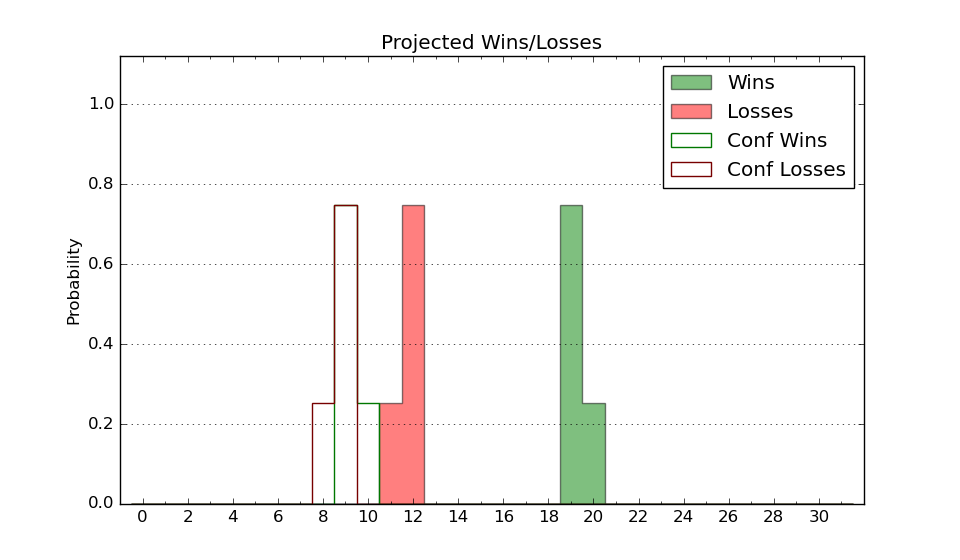

| Home | Game Probabilities | Conferences | Preseason Predictions | Odds Charts | NCAA Tournament |
| City: | Tuscaloosa, Alabama | |
| Conference: | SEC (5th)
| |
| Record: | 9-8 (Conf) 19-11 (Overall) | |
| Ratings: | Comp.: 19.3 (22nd) Net: 19.3 (22nd) Off: 117.4 (13th) Def: 98.2 (94th) SoR: 81.6 (31st) |
| Remaining | ||||||
|---|---|---|---|---|---|---|
| Date | Opponent | Win Prob | Pred. | |||
| 3/5 | @ LSU (16) | 25.8% | L 71-79 | |||
| Previous | Game Score | |||||
| Date | Opponent | Win Prob | Result | Off | Def | Net |
| 11/9 | Louisiana Tech (103) | 85.0% | W 93-64 | 11.4 | 9.1 | 20.5 |
| 11/12 | South Dakota St. (85) | 81.8% | W 104-88 | 7.6 | -3.2 | 4.4 |
| 11/16 | South Alabama (142) | 91.0% | W 73-68 | -27.8 | 10.3 | -17.5 |
| 11/19 | Oakland (176) | 93.0% | W 86-59 | -0.9 | 9.9 | 9.1 |
| 11/25 | (N) Iona (94) | 72.9% | L 68-72 | -18.4 | 8.4 | -10.0 |
| 11/26 | (N) Drake (91) | 72.5% | W 80-71 | -5.3 | 6.1 | 0.8 |
| 11/28 | (N) Miami FL (57) | 62.9% | W 96-64 | 15.8 | 16.2 | 32.0 |
| 12/4 | (N) Gonzaga (1) | 18.0% | W 91-82 | 9.6 | 10.7 | 20.3 |
| 12/11 | Houston (2) | 35.8% | W 83-82 | 15.7 | -5.4 | 10.3 |
| 12/14 | @Memphis (33) | 38.8% | L 78-92 | -2.6 | -13.2 | -15.8 |
| 12/18 | Jacksonville St. (134) | 90.2% | W 65-59 | -17.0 | 5.5 | -11.5 |
| 12/21 | (N) Davidson (49) | 60.1% | L 78-79 | 3.6 | -6.3 | -2.6 |
| 12/29 | Tennessee (11) | 46.4% | W 73-68 | -4.5 | 12.2 | 7.7 |
| 1/5 | @Florida (44) | 42.9% | W 83-70 | 7.0 | 9.6 | 16.6 |
| 1/8 | @Missouri (166) | 78.0% | L 86-92 | 9.8 | -33.5 | -23.6 |
| 1/11 | Auburn (13) | 48.1% | L 77-81 | -10.2 | 5.9 | -4.3 |
| 1/15 | @Mississippi St. (54) | 46.7% | L 76-78 | 0.3 | -1.2 | -0.9 |
| 1/19 | LSU (16) | 54.3% | W 70-67 | -6.7 | 9.7 | 3.0 |
| 1/22 | Missouri (166) | 92.4% | W 86-76 | 13.6 | -24.5 | -10.8 |
| 1/25 | @Georgia (188) | 81.0% | L 76-82 | -17.5 | -4.7 | -22.2 |
| 1/29 | Baylor (3) | 38.1% | W 87-78 | 22.7 | -0.7 | 22.0 |
| 2/1 | @Auburn (13) | 21.4% | L 81-100 | 3.7 | -11.0 | -7.3 |
| 2/5 | Kentucky (5) | 39.0% | L 55-66 | -34.6 | 23.9 | -10.7 |
| 2/9 | @Mississippi (104) | 62.7% | W 97-83 | 23.6 | -11.9 | 11.7 |
| 2/12 | Arkansas (21) | 64.4% | W 68-67 | -20.5 | 14.7 | -5.8 |
| 2/16 | Mississippi St. (54) | 74.9% | W 80-75 | -3.1 | 3.4 | 0.3 |
| 2/19 | @Kentucky (5) | 15.8% | L 81-90 | 21.5 | -26.6 | -5.1 |
| 2/22 | @Vanderbilt (76) | 53.1% | W 74-72 | -5.0 | 6.3 | 1.3 |
| 2/26 | South Carolina (102) | 84.7% | W 90-71 | 7.8 | -0.2 | 7.6 |
| 3/2 | Texas A&M (53) | 74.9% | L 71-87 | -15.9 | -18.5 | -34.4 |
| Stats & Trends | |||||
|---|---|---|---|---|---|
| Current | Day | Week | Month | Season | |
| Composite | 19.3 | -0.1 | -1.0 | -2.5 | -4.4 |
| Comp Rank | 22 | +1 | -2 | -- | -4 |
| Net Efficiency | 19.3 | -0.1 | -1.0 | -2.4 | -- |
| Net Rank | 22 | +1 | -2 | -- | -- |
| Off Efficiency | 117.4 | -0.1 | -0.3 | -1.1 | -- |
| Off Rank | 13 | -- | -1 | -3 | -- |
| Def Efficiency | 98.2 | +0.0 | -0.7 | -1.4 | -- |
| Def Rank | 94 | +2 | -8 | -14 | -- |
| SoS Rank | 1 | -- | -- | -- | -- |
| Exp. Wins | 19.3 | -0.0 | -0.7 | -0.5 | -1.0 |
| Exp. Conf Wins | 9.3 | -0.0 | -0.7 | -0.5 | -2.3 |
| Conf Champ Prob | 0.0 | -- | -- | -0.2 | -18.9 |

| Advanced Stats | ||
|---|---|---|
| Stat | Value | Rank |
| Off Eff FG % | 0.552 | 29 |
| Off Ast Ratio | 0.153 | 95 |
| Off ORB% | 0.375 | 8 |
| Off TO Rate | 0.147 | 66 |
| Off FT Ratio | 0.346 | 66 |
| Def Eff FG % | 0.467 | 62 |
| Def Ast Ratio | 0.117 | 29 |
| Def ORB% | 0.271 | 133 |
| Def TO Rate | 0.171 | 116 |
| Def FT Ratio | 0.314 | 216 |